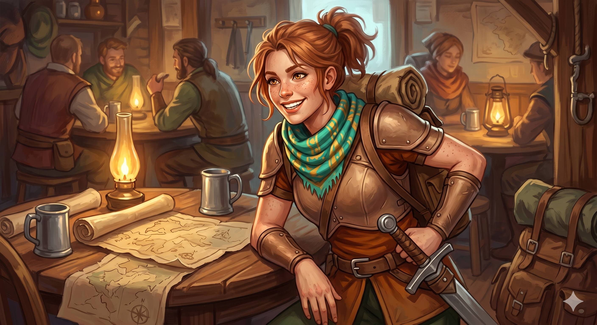

Appears in: Couch Potato Chaos, Couch Potato Crisis
Profile

- Appears in: Couch Potato Chaos, Couch Potato Crisis
- Aliases: Paula
- Cross-book continuity: Appears in both books.
- Personality: Paula is a genuine anomaly in Etheria: someone who does not merely tolerate the death-and-respawn cycle but actively celebrates it. Where most Etherians view resurrection as a necessary inconvenience — preserving memory but potentially scrambling personality — Paula treats each death as an opportunity for reinvention. Her quoted enthusiasm (“Becoming someone new over and over again is just about the best thing ever”) frames personality shifts not as identity erosion but as the ultimate variety experience. This makes her either the most psychologically resilient person in Etheria or the most reckless — possibly both. In Crisis, she appears in Gelkorus’s orbit as a messenger and confidante, suggesting she has found a role in Zhakaran power politics that accommodates (or exploits) her unusual relationship with mortality. Her willingness to serve as Gelkorus’s bad-news proxy — a job that literally gets her incinerated by the queen — aligns perfectly with her stated philosophy: if dying is a rush and becoming someone new is the best thing ever, then delivering news to a murderous tyrant is less a death sentence and more an extreme sport.
- Backstory: Paula’s origins are unrecorded. She first appears in Chapter 21 of Couch Potato Chaos as a thrill-seeking adventurer whose attitude toward death is unusually positive — she views the respawn cycle as exciting rather than traumatic, making her a natural fit for high-risk activities that would terrify ordinary Etherians. By the time of Couch Potato Crisis, she has entered Gelkorus’s service as a messenger and agent, operating within the Zhakaran court. Gelkorus uses her as a bad-news proxy: when he needs to deliver unwelcome information to Queen Murderjoy, he sends Paula instead of going himself, knowing the queen’s temper may result in the messenger’s death. That Murderjoy incinerates Paula rather than punishing Gelkorus reveals both the queen’s management style and Paula’s expendability — or rather, Paula’s willingness to be “expended” given her philosophical comfort with respawning. Gelkorus reveals his full backstory to Paula over soda and chips in The Sorceress of the South, suggesting a genuine friendship or at least a relationship of trust that goes beyond their professional arrangement.
- Significant story events:
- Chapter 21 — The Queen and the Pirate (Chaos): Paula appears as a thrill-seeking adventurer who expresses her enthusiastic attitude toward the death-and-respawn cycle. Her quote about dying being “a rush” establishes her unique psychological profile.
- Chapter 9 — The Sorceress of the South (Crisis): Murderjoy discovers that Gelkorus has been using Paula as a bad-news proxy — sending her to deliver reports that might trigger the queen’s lethal temper. Murderjoy is simultaneously furious and grudgingly impressed by Gelkorus’s ruthlessness. Gelkorus later reveals his full backstory to Paula over soda and chips, suggesting their relationship extends beyond simple professional utility.
- Notable Quotes:
“Dying and coming back to life in a new body is a rush. Becoming someone new over and over again is just about the best thing ever.” — Chapter 21, The Queen and the Pirate. Paula describes her unusually enthusiastic attitude toward the respawn cycle.
- Relationships:
- Gelkorus: Employer and friend in Crisis. Gelkorus uses Paula as a messenger and bad-news proxy, and trusts her enough to share his full backstory over soda and chips. Their relationship combines professional utility with genuine camaraderie — Gelkorus needs someone willing to die delivering messages, and Paula needs someone who appreciates her unusual talents.
- [Queen [Aralynn Murderjoy](./character-queen-aralynn-murderjoy.html)](./character-queen-aralynn-murderjoy.html): The queen incinerates Paula when she delivers bad news on Gelkorus’s behalf. Given Paula’s philosophy, this is less an occupational hazard and more a feature of the job.
- References: Couch Potato Chaos: Chapter 21 - The Queen and the Pirate, Characters | Couch Potato Crisis: Chapter 9 - The Sorceress of the South